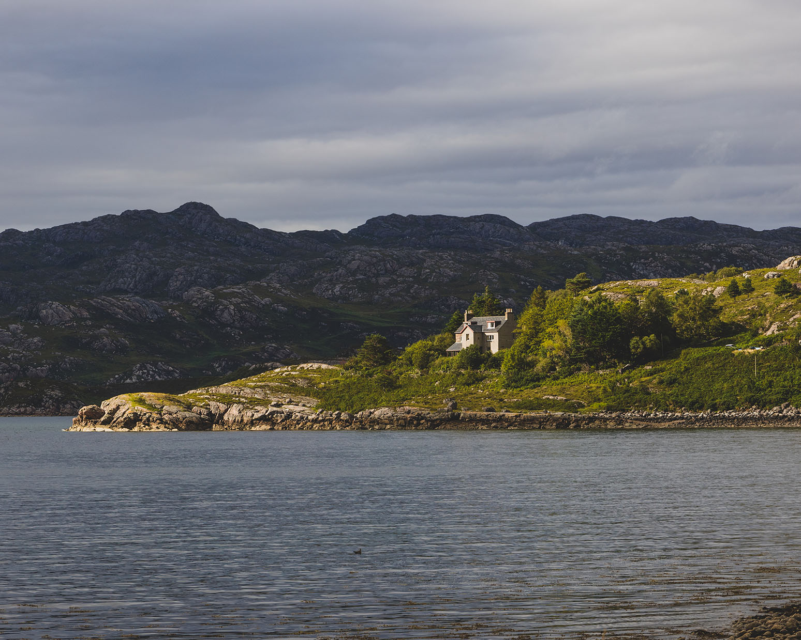
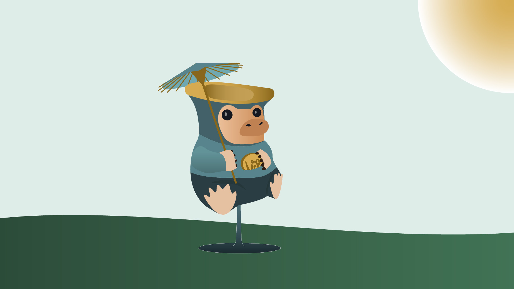

Wer ist Noé Plain
Mein Beruf
Seit August 2021 bin ich in der Lehre als Mediamatiker EFZ. Zuerst habe ich meine Lehre mit dem Basislehrjahr des Zürcher Lehrbetriebsverbands ICT begonnen. Jetzt bin ich beim Migros-Genossenschaft-Bund (MGB) und arbeite gerade für SportXX und Bike World. Im Beruf des Mediamatikers sind zwei meiner liebsten Arbeiten die Fotografie und das Illustrieren. Auch das Erstellen von Animationen bereitet mir immer wieder Freude. Das Schneiden von Filmen gehört ebenfalls in die Liste meiner Favoriten.
Fotografie
Mit dem Fotografieren habe ich während des Lockdowns begonnen. Das Fotografieren habe ich mir zu Beginn selbst beigebracht mit Videos von Benjamin Jaworskyj. Während der Ausbildung konnte ich die Materie in Modulen der Berufsschule vertiefen. Beim Fotografieren ist es mir wichtig, Eindrücke aus meiner Umgebung einzufangen und mit anderen Menschen zu teilen. Dabei habe ich zuerst auf ein iPhone 11 und eine Canon EOS 450D von 2008 gesetzt. Inzwischen bin ich Nutzer der Canon EOS RP, welche einen super Job leistet, auch wenn es nicht die teuerste Kamera auf dem Markt ist.
Presets
Zur Zeit nutze ich vorallem mein angepasstes Matt-Preset um meine Bilder zu bearbeiten.
Matt HochzeitIllustration
Das Illustrieren entdeckte ich während dem fünten Modul des ZLI. Hierbei konnten wir illustrieren was wir wollten. Dabei habe ich mein erstes Logo erstellt, einen «Niffler» (ein von J.K.Rowling erfundenes fantastisches Tierwesen) illustriert und ein abstraktes Bild mit einer Art Kugeln nachillustriert. Diese Arbeiten haben den Weg bereitet für eine neue Leidenschaft: In der Berufsschule konnte ich mich weiter verbessern, da wir ein Modul zum Thema Illustrator hatten. Auch heute ist mein Tool der Wahl immer Illustrator, aber für die Layouts von Texten, Flyern etc. verwende ich lieber InDesign.
